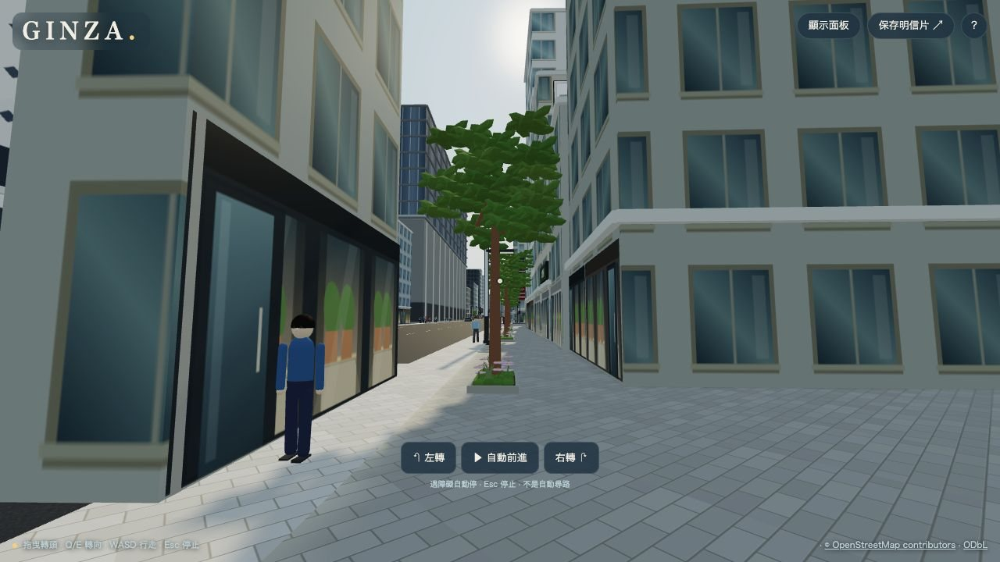

產品文檔 · 入口
銀座 3D 漫遊
用 OpenStreetMap 資料，在瀏覽器裡重建東京銀座一〜八丁目約 1.2 × 1.5 km 的街區，可從空中鳥瞰，也能以第一人稱走在街上。純靜態網頁，沒有建置步驟與後端。
建築
2,548 棟
OSM 外形；約九成高度為估算
店家招牌
1,257 筆
網頁最多顯示 512 塊；含 149 個大樓頂部招牌
街上活動
170 車 · 2,200 人
靠左行駛、沿人行道走、路口隨機轉向
建置與依賴
0 步驟
不需 npm install；Three.js r180 隨附
五分鐘速覽
維護者偶爾從 OpenStreetMap 抓一次資料，轉成兩份 JSON 放在專案裡。之後每次有人打開網頁，瀏覽器就讀這兩份檔案，當場生成建築、店面、招牌、人車、花壇、路燈與日夜光線。
人工（維護者／使用者操作）
自動腳本
LLM（本專案未使用）
檔案 / 儲存
外部 API
只有 ① 需要網路與人工；②③ 的結果已放在專案內，④⑤ 在使用者瀏覽器內完成，沒有後端服務。

常見問題：截圖是 2026-10-09 版本，店面玻璃後尚未有店內縱深；最新外觀見「店面與店內縱深」。
下一步：③ 店面與店內縱深
給接手人的閱讀路徑
30 分鐘
看懂產品
本頁 → 這是什麼 → 功能一覽 → 端到端流程
1 小時
能跑能修
+ 啟動與測試 + 故障排查 + 檔案地圖
半天
能加功能
+ ①〜④ 流程頁 + 資料格式 + 想加 X 改哪
本站為誰而寫
主要讀者是日後接手或回頭維護這個專案的開發者。每頁都假設你「明天要負責它」。若某段含糊、不可執行、或寫的是沒確認過的推論——那就是 bug，請直接改 HTML。